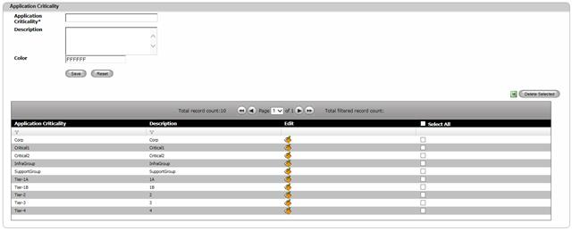
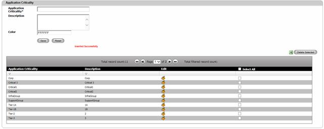

Create Application Criticality
To create an Application Criticality,
1. Navigate Application>>Application Criticality on the DCTrackMobileWeb menu bar.
You will see the Application Criticality screen.

Figure 202: Application Criticality screen
2. Enter information for the required field.
3. Color is combination of both Fore and back colors which will be used to represent this Criticality in App Summary – Rack report.
4.
Click Save  button to complete the creation process or else
click Reset
button to complete the creation process or else
click Reset  button to refresh the page fields.
button to refresh the page fields.
Upon saving, you will see the successful creation message and the created Application Criticality listed on the Table View.

Figure 203: Application Criticality Screen – Successful Creation